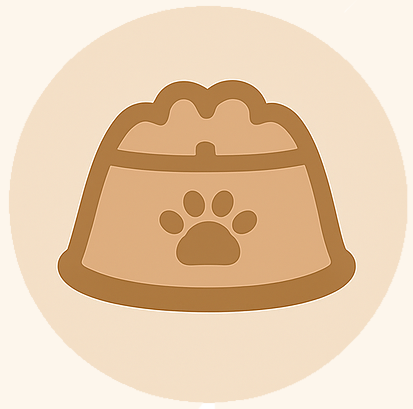
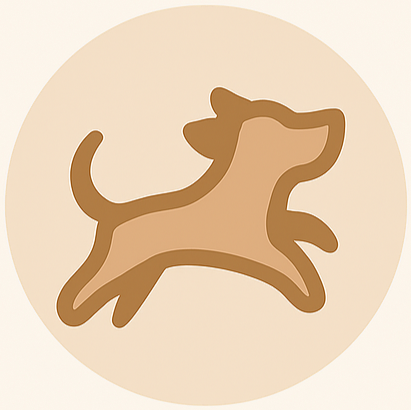
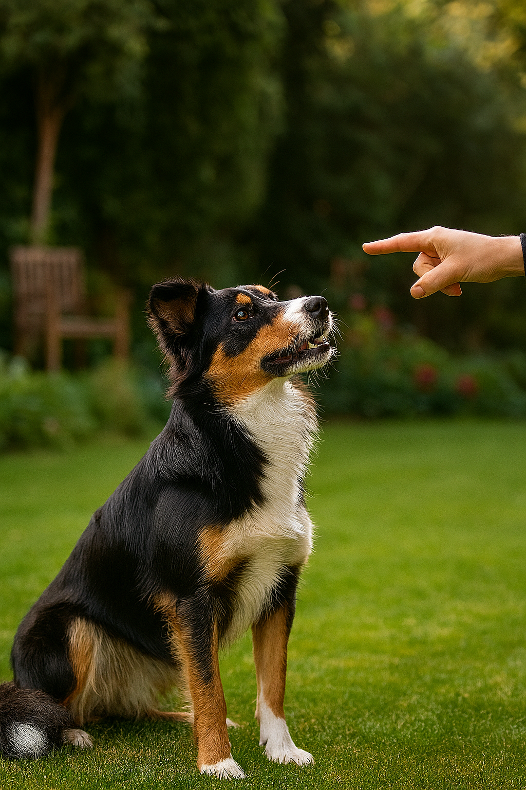
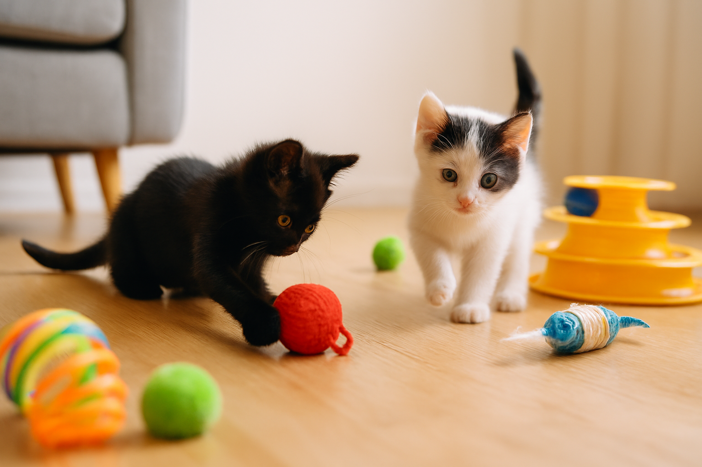

Feeding pets is more than filling a bowl it’s about safety and balance. Some human foods are toxic, so knowing what’s safe helps avoid health problems. The right diet keeps your pet happy, healthy, and thriving.
Here, you’ll discover easy ways to build routines and training habits that make life better for both you and your pet.
Learn the right daily routine of a pet :
Feeding schedule :
A healthy routine starts with food, cats often prefer smaller meals spread out 3–4 times a day. Keeping meals at the same times every day helps their digestion and prevents overeating.

Excercice and playtime :
Dogs usually need at least two walks a day, plus some playtime like fetch or tug-of-war.
Cats need 15–30 minutes of play each day—chasing toys, climbing, or exploring new spots around the house.

Sleep and rest :
Dogs typically sleep 12–14 hours a day, and cats can sleep up to 16 hours or more. Make sure they have a quiet, comfortable space to relax without being disturbed.
Bonding time :
Spend time petting, brushing, or training your pet each. For dogs, short training sessions strengthen good behavior, and for cats, gentle interaction and play build trust. Little routines like these make pets feel secure and loved.

For dogs :
Basic Commands : Teach simple commands like sit, stay, and come using treats or praise when they do it correctly. Keep sessions short and practice regularly.
Potty Training : Take your dog outside at the same times each day and reward them when they go in the right spot. Be patient with accidents—punishment slows learning.
Walking Manners :Stop walking if your dog pulls on the leash, and continue only when they walk calmly by your side. Short, consistent practice works best.
Behavior & Discipline : Redirect unwanted behavior, like chewing or excessive barking, by giving a toy or removing attention. Reward calm, good behavior consistently.

For cats :
Litter Box Training : Keep the litter box clean and in a quiet spot. Reward your cat for using it properly and avoid punishment for mistakes.
Scratching Management : Provide scratching posts or pads and reward your cat when they use them. Trim nails regularly to prevent damage.
. Simple Tricks : Cats can learn small tricks like come when called or high-five using toys or treats. Keep training sessions short.
Behavior Guidance : Redirect unwanted behaviors like scratching furniture or jumping on counters. Reward calm and desired actions to encourage good habits.